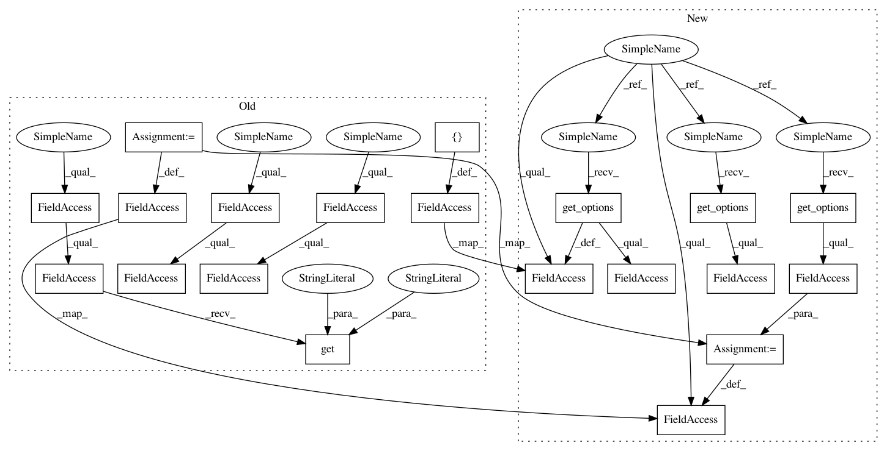

ee0732a42bdd614baf0e065326f1f6872a041d3a,src/python/pants/backend/core/tasks/markdown_to_html.py,MarkdownToHtml,__init__,#MarkdownToHtml#,213
Before Change
self._templates_dir = os.path.join("templates", "markdown")
self.open = self.context.options.markdown_to_html_open
self.extensions = set(
self.context.options.markdown_to_html_extensions or
self.context.config.getlist("markdown-to-html",
"extensions",
default=[".md", ".markdown"])
)
self.fragment = self.context.options.markdown_to_html_fragment
self.code_style = self.context.config.get("markdown-to-html", "code-style", default="friendly")
if hasattr(self.context.options, "markdown_to_html_code_style"):
if self.context.options.markdown_to_html_code_style:
self.code_style = self.context.options.markdown_to_html_code_style
def execute(self):
// TODO(John Sirois): consider adding change detection
After Change
def product_types(cls):
return ["markdown_html", "wiki_html"]
def __init__(self, *args, **kwargs):
super(MarkdownToHtml, self).__init__(*args, **kwargs)
self._templates_dir = os.path.join("templates", "markdown")
self.open = self.get_options().open
self.extensions = set(self.get_options().extension)
self.fragment = self.get_options().fragment
self.code_style = self.get_options().code_style
def execute(self):
// TODO(John Sirois): consider adding change detection
In pattern: SUPERPATTERN
Frequency: 3
Non-data size: 20
Instances
Project Name: pantsbuild/pants
Commit Name: ee0732a42bdd614baf0e065326f1f6872a041d3a
Time: 2014-11-04
Author: benjyw@gmail.com
File Name: src/python/pants/backend/core/tasks/markdown_to_html.py
Class Name: MarkdownToHtml
Method Name: __init__
Project Name: pantsbuild/pants
Commit Name: ee0732a42bdd614baf0e065326f1f6872a041d3a
Time: 2014-11-04
Author: benjyw@gmail.com
File Name: src/python/pants/backend/core/tasks/markdown_to_html.py
Class Name: MarkdownToHtml
Method Name: __init__
Project Name: pantsbuild/pants
Commit Name: 8644bcae650cf01b682db6a7dc5af223c53532ad
Time: 2015-02-09
Author: zundel@squareup.com
File Name: src/python/pants/backend/codegen/tasks/protobuf_gen.py
Class Name: ProtobufGen
Method Name: __init__
Project Name: pantsbuild/pants
Commit Name: 04a368c3617d3ceac60170f6a68428bdfd815cb1
Time: 2015-02-10
Author: zundel@squareup.com
File Name: src/python/pants/backend/codegen/tasks/protobuf_gen.py
Class Name: ProtobufGen
Method Name: __init__